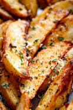

Wholesome Potato Wedges made in Air Fryer
Ingredients
- 2 medium russet potatoes
- 1 1/2 tablespoons olive oil
- 1/2 teaspoon ground paprika
- 1/2 teaspoon parsley flages
- 1/2 teaspoon chili powder
- 1/8 teaspoon ground black pepper
Steps
- Preheat an air fryer to 400 degrees F (200 C)
- Cut each potato in half lengthwise. Cut each half in half lengthwise, then cut each quarter in half lengthwise
You will have 16 wedges
- Place potato wedges in a large bowl. Add olive oil, paprika, parsley, chili, salt, and pepper
mix until well combined
- Place 1/2 of the potato wedges in teh basket of the air fryer and cook for 10 minutes
- Flip wedges with tongs and cook an additional 5 minutes.
Remove to plate
- Repeat to cook remaining wedges